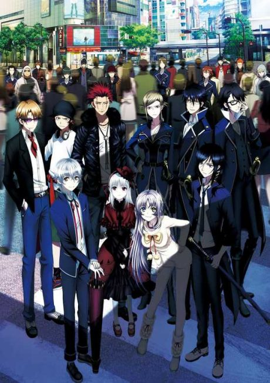

Tokyo Ravens
東京レイヴンズ
After the anime, read the light novel from Volume 10.
7.1AniList score
—Animeter, no votes yet
24episodes
Anime finished. Where does the story go next?
Start at Volume10
The anime covers through volume 9 but rushes it and uses an anime-original ending that changes key events. Start at volume 10 for new material, or volume 9 for the canon version of the arc.
19ongoing
Season 1Start reading here
More like Tokyo Ravens
 Original7.3
Original7.3
 Manga Vol. New Testament 17.0
Manga Vol. New Testament 17.0
 Unclear7.4
Unclear7.4
 Manga Ch. 377.7
Manga Ch. 377.7
 Manga Vol. 77.2
Manga Vol. 77.2

Original7.1